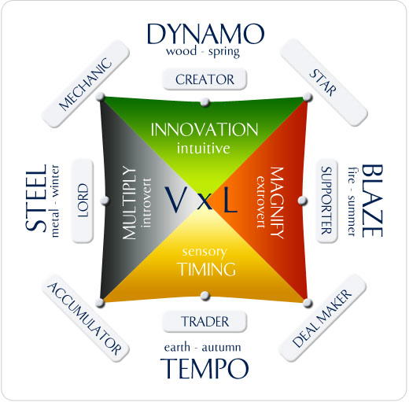

Brilliant stuff, got me totally clear on what I am ( mechanic) and better ideas on how to leverage that to create value!
No notes so far, but Wikipedia has an overview of Wealth Dynamics

The profiles are described in more detail in the following Youtube Videos:
The Seven Truths of Wealth Dynamics:
- You evolve from one level to the next. If the next level doesn’t feel right, you can go back to where you feel comfortable and play that game!
- Within our selfs we have the entire spectrum
- Level 1: There are different games
- Make sure to know what the games are
- Focus on one game to get results
- Level 2: You create your game
- You have to know what your game is
- This gives clarity and lets you to persevere
- Level 3: Your game needs to flow
- The more you play your game, the more you get into flow
- This comes not from learning but from actually playing the game
- You start to love your live and everything you are doing
- Level 4: Flow attracts resources
- Because you are in flow, you attract more of what you love
- You belief, that when you get in flow, that you attract the resources (the law of attraction only works with belief)
- People at level 1 say that they need the money first to get into business. People alt level 4 say I need to get into flow in my game and start to work with other people who are in flow in their game and eventually the money will come my way.
- Level 5: Flow accelerates critical moments
- I can choose my luck
- I can’t even imagine what those critical moments will be, but I know that I will attract them
- All of our best opportunities come by positioning not by our chasing.
- Level 6: Flow creates synchronicity
- Anyone who is at a high level of focus and frequency within their flow is going to take it for granted, that just amazing things are happening every day. They wake up into the magic.
- Level 7: Flow leads to fortune
- When you get into the level of flow where every thing tunes into you, that’s where out pops your fortune, out pops the purpose why you are even here on this planet.